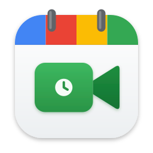

Privacy Policy
Meet for Calendar is a personal macOS app that creates Google Meet links for events in Apple Calendar. This policy explains what data it uses.
Data the app accesses
- Google permission: only
https://www.googleapis.com/auth/meetings.space.created, which lets the app create Google Meet meeting rooms in your account and view or edit the rooms it created. - Google sign-in tokens: after you sign in, Google issues an access token and a refresh token so new rooms can be created without signing in each time.
The app does not access your Google Calendar, Gmail, Drive, contacts, profile, or any meetings it did not create. It does not read the contents of your Apple Calendar events beyond what macOS passes when you choose “Google Meet”.
How data is used and stored
- Tokens are stored only on your Mac, in the app's private sandboxed folder, readable only by your user account.
- The app sends data only to Google (
accounts.google.com,oauth2.googleapis.com,meet.googleapis.com) to sign in, refresh tokens and create meeting rooms. - No data is sent to the developer or any third party. There are no analytics, ads or tracking.
- No data is sold, shared or used for any purpose other than creating meeting links for you.
Google API Services User Data Policy
Meet for Calendar's use of information received from Google APIs adheres to the Google API Services User Data Policy, including the Limited Use requirements.
Removing your data
Click Sign out in the app to revoke its access with Google and delete the stored tokens. You can also remove access at any time at myaccount.google.com/permissions. Deleting the app removes everything it stored.
Contact
Questions: open an issue on this site's GitHub repository.